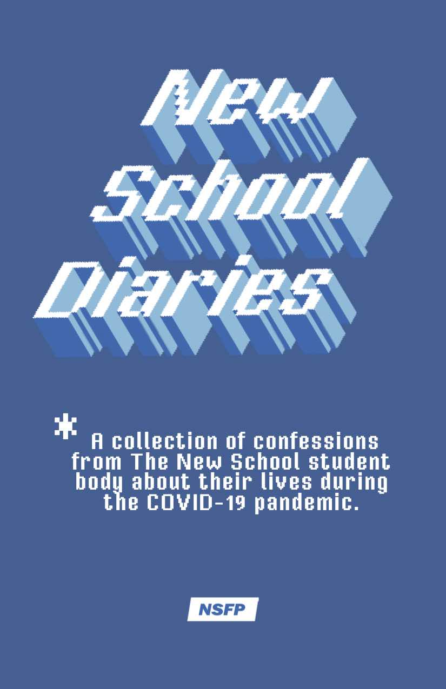

This semester I created and edited a series for the New School Free Press called New School Diaries. We issued the student body a prompt about their lives during COVID-19, asking them to share their biggest challenge or greatest success during this weird time.
For this class, I decided to use my final assignment to design a downloadable zine format for the series that we plan to link on the Free Press website. I chose to keep the color palate monochrome to maintain continuity with the illustrations. I left my name off the front because there is actually very little of my own writing in the zine, and it felt disingenuous to frame myself as an "author." I also had to do away with automatic page numbering because InDesign would not allow me to change the color of the numbers on each page in order to create enough contrast over the illustrations (there was also one instance where neither white nor blue had enough contrast and I needed to offset the number to the right).
Here is a link to download the PDF version!
Here is a link back to my home page